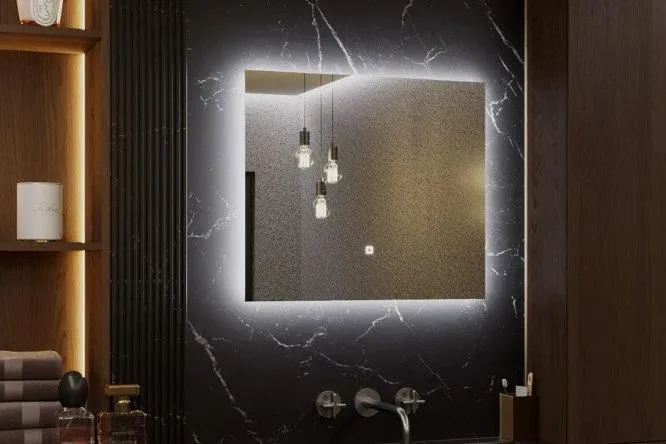
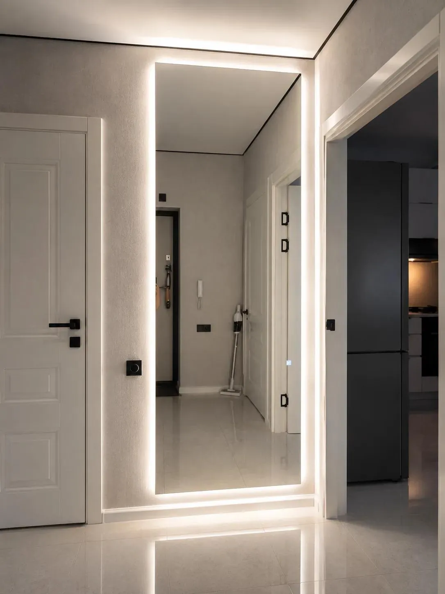

По вашим размерам · Мурино
Зеркало с подсветкой на заказ в Мурино и Санкт-Петербурге
Изготовим зеркало с подсветкой по вашим размерам: выберите форму, цвет света и управление, а стоимость рассчитайте онлайн.
Принимаем заказы в Мурино, Буграх и Новом Девяткино. Выезд в другие районы Санкт-Петербурга согласуем индивидуально.

Фотографии и визуализации
Для ванной, прихожей и в полный рост

Зеркало для ванной
Подберём размеры под тумбу и стену. До изготовления согласуем расположение вывода питания и креплений.

Зеркало в прихожую
Размеры подбираем под свободное место на стене у входа.

Зеркало в полный рост
Для прихожей, спальни или гардеробной. Высоту и ширину выбираем под стену.
Как заказать зеркало в Мурино
Выберите размеры
Измерьте место установки. В калькуляторе выберите форму, высоту, ширину и подсветку.
Согласуем детали
Отправьте расчёт и пожелания в MAX. Обсудим крепление, питание, адрес и срок изготовления.
Доставка и монтаж
Согласуем удобный вариант получения. Доставку и установку можно включить при расчёте.
Сколько стоит зеркало с подсветкой?
Итог зависит от размеров, формы, обработки кромки, подсветки, управления и выбранных услуг. Укажите свою комплектацию в калькуляторе и увидите итоговую стоимость. Детали заказа и условия доставки подтвердим при согласовании.
Вопросы и ответы
Можно заказать зеркало нестандартного размера?
Да. Укажите размеры в калькуляторе. Сложную форму по эскизу и возможность изготовления уточним отдельно.
Как выбрать цвет подсветки?
Доступны тёплый, нейтральный и холодный свет. При заказе выберите подходящий оттенок и управление.
Есть доставка и установка в Мурино?
Да. Выберите нужные услуги в калькуляторе; адрес, доступ к месту монтажа и условия выезда согласуем до изготовления.
Можно приклеить зеркало с подсветкой?
Для зеркала с подсветкой используем крепёж с зазором под светодиодную ленту и блок питания. Способ монтажа согласуем с учётом стены и расположения питания.
Другие зеркала на заказ
Рассчитайте зеркало для своего интерьера
Начните с размеров. Итоговую стоимость покажет калькулятор.